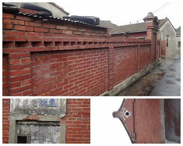
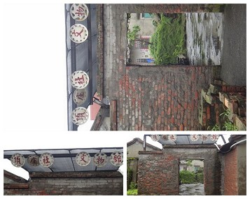
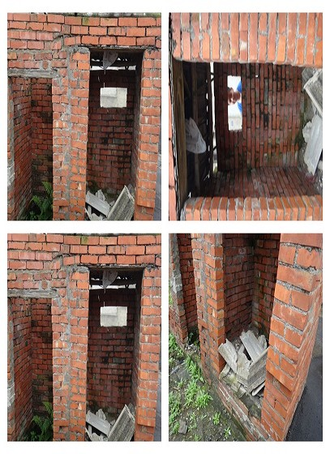
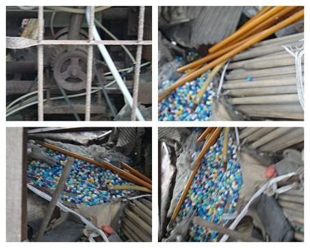
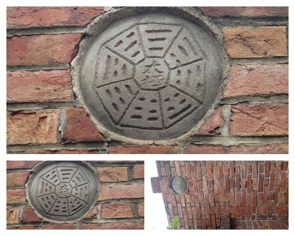
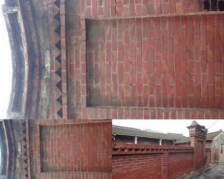
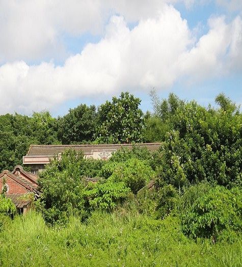
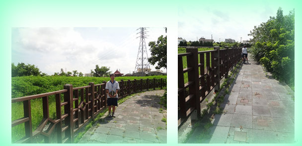
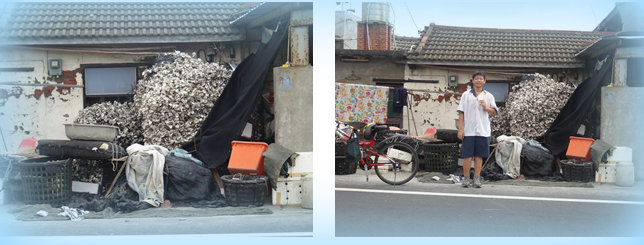
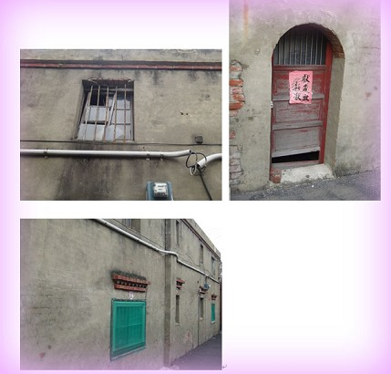

位於線西最北方的"頂庄"，社區內有林立的三合院，悠遊在村莊裡，古色古香的三合院群，如同迷宮般的錯縱複雜，十分有趣。

在古代建造了"頂庄文物館"，至今還存留現場。

在頂庄文物館旁的"公廁(茅廁)~

已經歷史悠久的傘工廠，遺留至今至少有３０年，主要製作雨傘中間支撐的長柄，往工廠裡瞧，還有遺留下來的製材料及成品！

走著～走著～ 無意間，看到了牆上的八卦，看起來好像頗有價值！

這面牆用來擋風，因此稱之為＂擋風牆＂～

這是辛家古厝，可是因為太多雜草了所以我們都不敢進去呢!!




心得分享:
在看過這些古蹟之後，我才發現我們的這個村有很多很老舊的房屋，因為，有很多的三合院或是洋房，都已經長滿草堆了，還有一些根本就是廢墟，所以，為了保護這些歷史古蹟，就應該要愛惜它們。
<--回頂庄村首頁 |